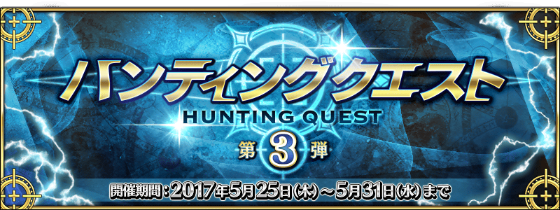
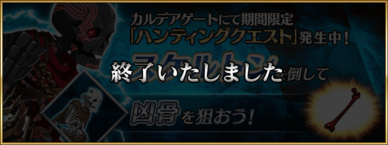
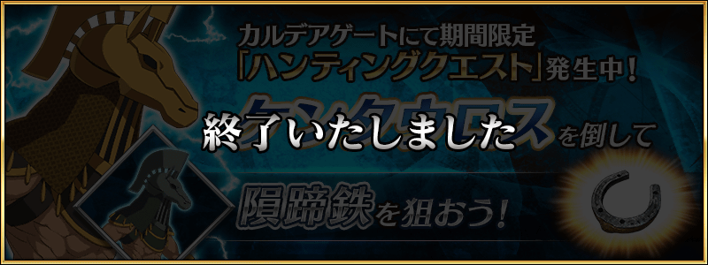
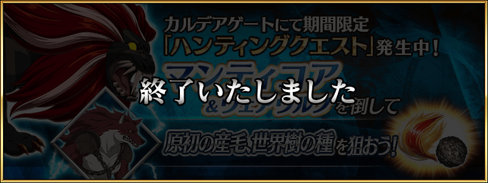
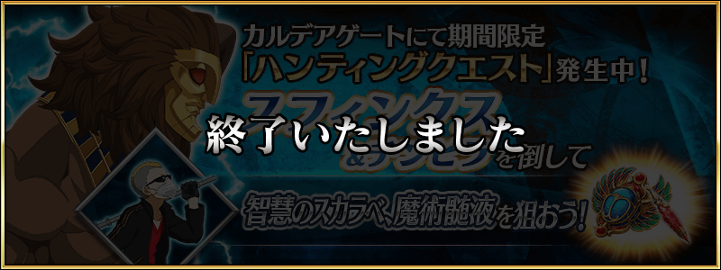

◆舉辦期間◆
2017年5月24日(三) 23:00～5月31日(三) 11:59
◆活動概要◆
容易取得特定的技能強化＆靈基再臨素材高難易度關卡，「狩獵關卡」！
活動期間中，特定敵人為對象的狩獵關卡依序在迦勒底之門出現。
關卡有3階段難易度的設定，在各自的期間內皆能無數次挑戰。
另外，能獲得魔力稜鏡(マナプリズム)做為關卡通過報酬。
挑戰關卡以獲得技能強化＆靈基再臨素材做為目標吧！
◆参加條件◆
只有通過教學的Master才能參加
5月24日(三)23:00～5月25日(四)22:59

5月25日(四)23:00～5月26日(五)22:59

5月26日(五)23:00～5月27日(六)22:59

5月27日(六)23:00～5月28日(日)22:59

5月28日(日)23:00～5月29日(一)22:59

5月29日(一)23:00～5月31日(三)11:59